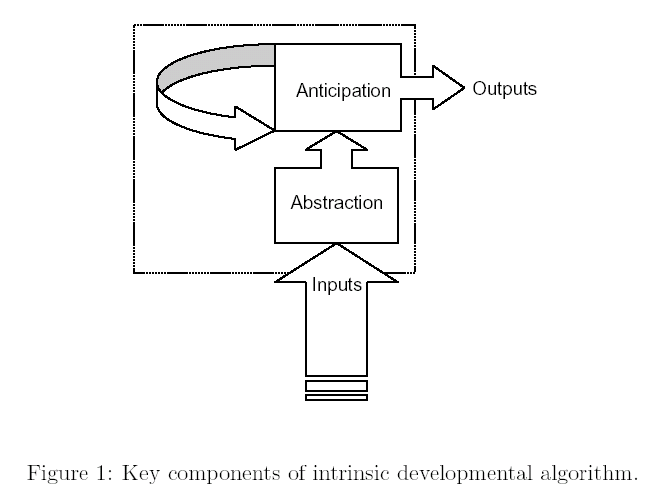
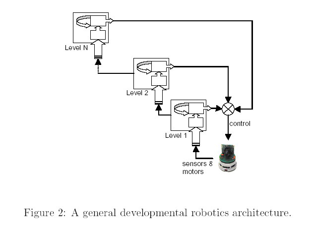
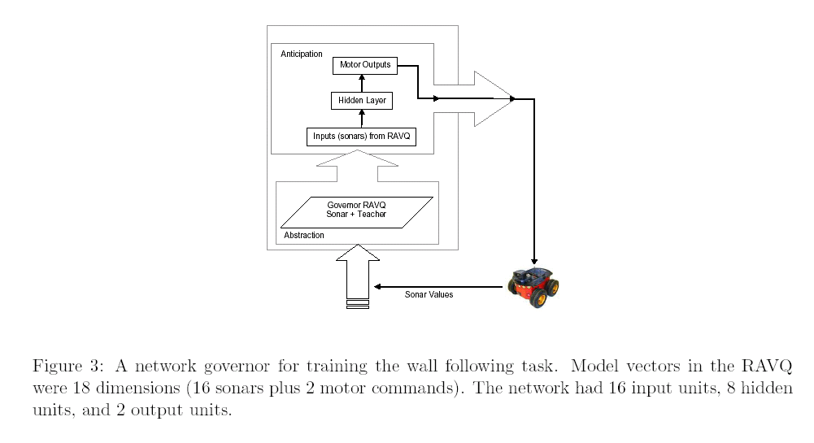
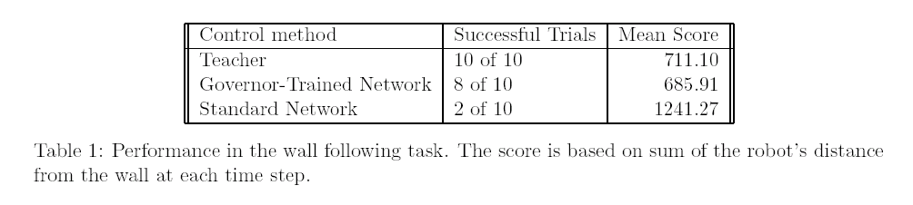
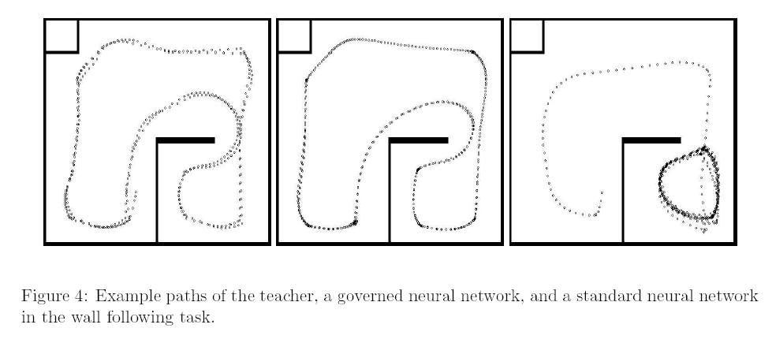
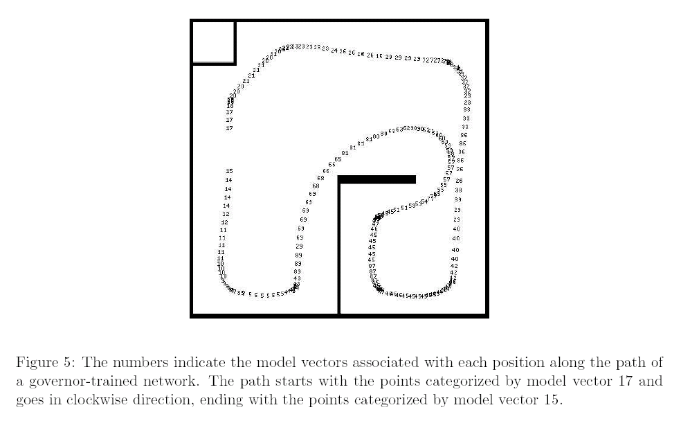
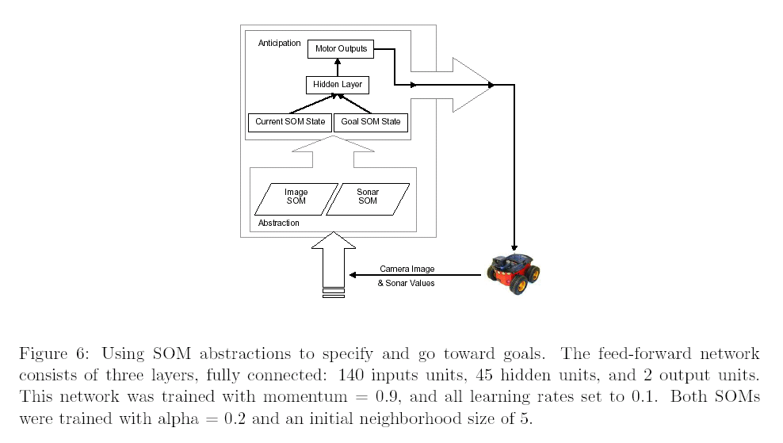
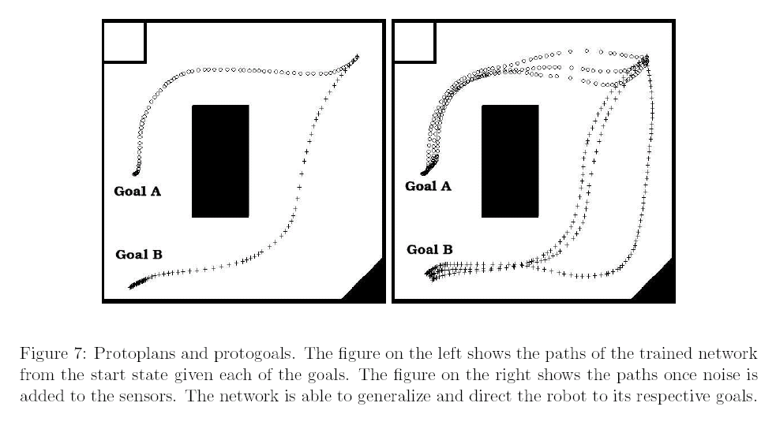
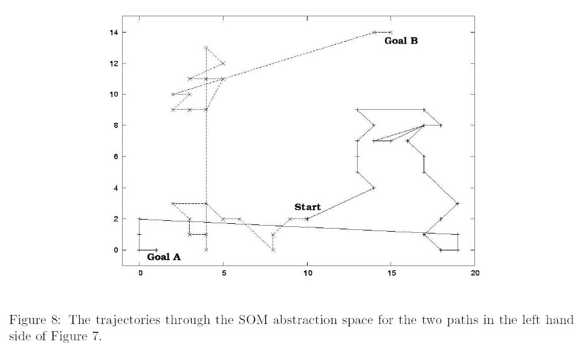

|
|||||||
| [ Home ] | [ Software ] | [ Curriculum ] | [ Hardware ] | [ Community ] | [ News ] | [ Publications ] | [ Search ] |
|
1. Bringing up robot: Fundamental mechanisms for creating a self-motivated, self-organizing architectureDoug Blank, Deepak Kumar, Lisa Meeden, and Jim Marshall. Cybernetics and Systems, 2005, 36(2)
Here is a
1.1. Introduction
1.2. Overview of a Developmental Robotics ParadigmGoals:
Issues:
1.3. The Intrinsic Developmental Algorithm
1.3.1. Discovering AbstractionsSelf-organizing Map (see SOMExampleProgram for example)
1.3.2. Anticipating the FutureSimple Recurrent Network
1.3.3. MotivationLike a so-called co-evolutionary arms-race 
1.4. Experiment #1: Using abstractions to govern neural network learningProblem: a neural network on a robot does not get symbols spoon-fed to it. Rather, the world is coming in through its sensors all the time. There may be long periods in which the input doesn't change. If the network indiscriminately attempts to learn on every time step, then this can lead to catastrophic forgetting. In such a situation, the network doesn't learn to generalize at all. Solution: balance the input/target training evenly over all types of patterns. The Neural Network Governor: rather than constantly learning on the current input/target pair, create a SOM-like filter that creates abstractions, categorizes them, and trains in a balanced way.    
1.5. Experiment #2: Using abstractions to create purposeful behaviors   |
| [ Home ] | [ Software ] | [ Curriculum ] | [ Hardware ] | [ Community ] | [ News ] | [ Publications ] | [ Search ] |
 View Wiki Source | Edit Wiki Source | Mail Webmaster
View Wiki Source | Edit Wiki Source | Mail Webmaster | |||||||